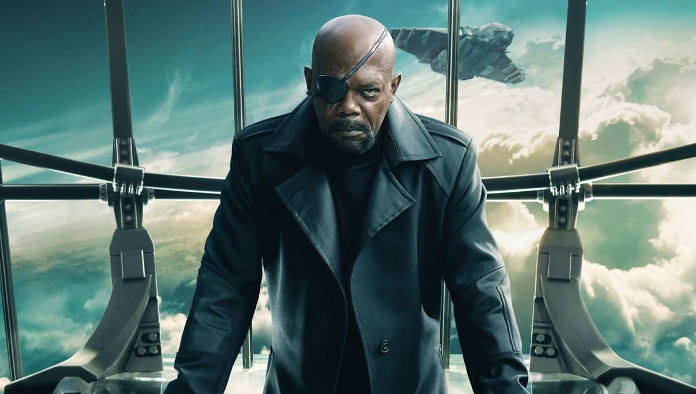

Wajah Nick pastinya sudah tidak asing lagi bagi pecinta MCU. Saat ini, dia adalah direktur SHIELD. Namun, di film Captain Marvel, dia masih menjabat sebagai birokrat kelas rendah. Di film ini, karakternya tampil berbeda. Nick tidak memakai penutup mata kirinya seperti yang sudah menjadi cirri khasnya selama ini. Di film ini, dia terlihat masih punya dua mata yang utuh.
Dan, untuk kali pertama, Nick akan tampil banyak di sebuah film. Seperti yang sudah-sudah, meski menjadi salah satu pemain penting di MCU, peran Nick tidak pernah besar. Dia hanya tampil sekilas-sekilas, kecuali di Captain America: Winter Soldier, di mana dia tampil agak banyak.
Di Captain Marvel, Carol adalah superhero pertama yang ditangani Nick. Apa pun yang terjadi di film itu, ada dua hal yang sudah jelas. Satu, ada peluang fans bakal melihat bagaimana Nick kehilangan salah satu matanya. Dua, peristiwa di film ini akan membuka jalan baginya menjadi orang yang menyatukan Avengers.
Selain tidak tampil dengan salah satu mata yang ditutup, Nick juga terlihat muda di Captain Marvel. Seperti yang mereka lakukan di Ant-Man, Captain America: Civil War, Guardians of the Galaxy Vol 2, dan Ant-Man and the Wasp, Marvel memberikan sentuhan magis untuk membuat Samuel jadi terlihat 25 tahun lebih muda di Captain Marvel. Tak seperti film sebelumya, di mana karakter yang dimudakan hanya tampil sekilas untuk mengenang masa lalu, ini adalah kali pertama sebuah karakter dibuat lebih muda untuk satu film utuh.